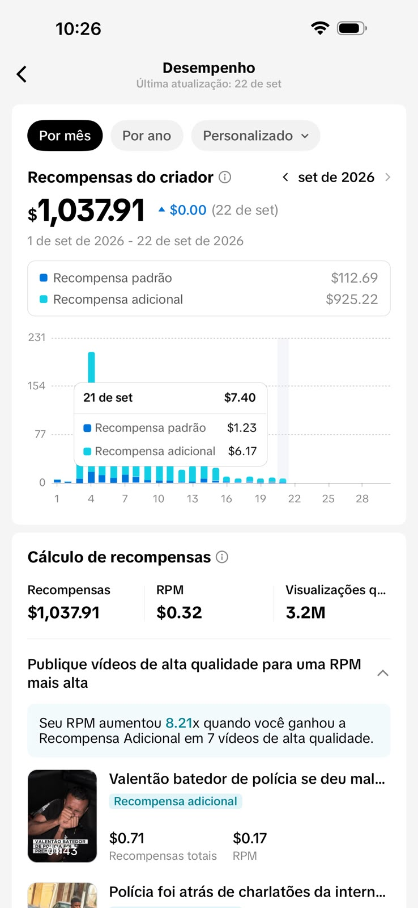
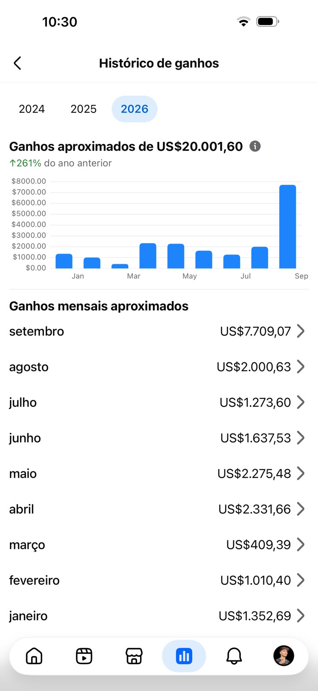
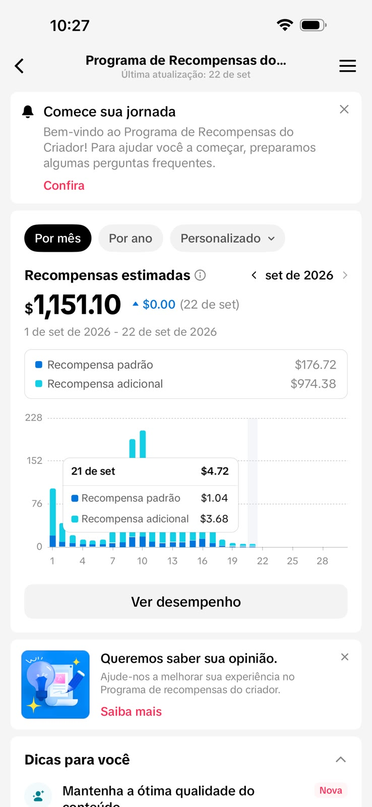
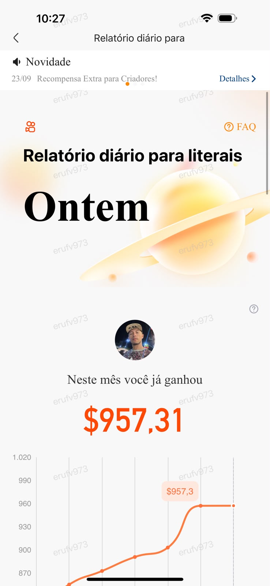
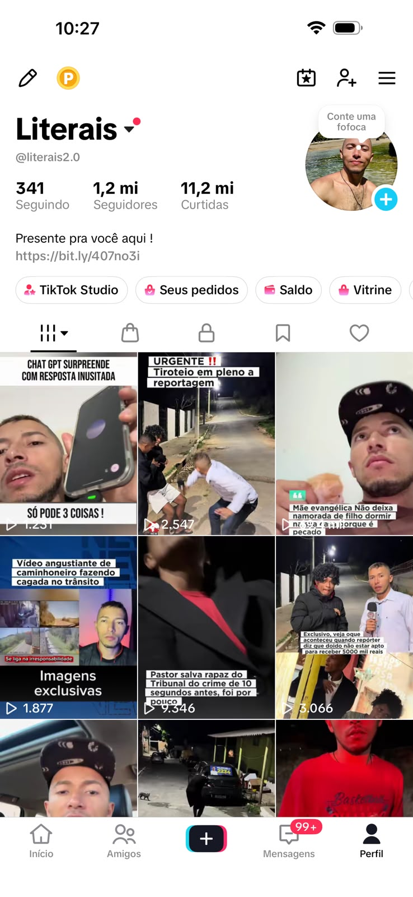

US$ 1.037,91
Recompensa + alcance
3,2 milhões de visualizações qualificadas exibidas no painel.
PRECISA SABER O QUE FAZER COM A ATENÇÃO QUE CONSEGUE.
Um guia direto para entender como conteúdo, alcance e oportunidades de monetização podem se conectar — sem depender de promessas fáceis.
OLHA O QUE JÁ APARECE NA PRÁTICA.
Alguns registros compartilhados por criadores mostram como conteúdo, alcance e consistência podem se transformar em recompensas dentro das plataformas.
Ganhos aproximados exibidos em um histórico de 2026.


US$ 1.037,91
US$ 1.151,10
US$ 957,31
1,2 MILHÃO*Os valores e métricas acima são os que aparecem nos prints enviados. Resultados variam conforme execução, conteúdo, plataforma e contexto.
É não saber onde começar.
Você abre o celular. Vê pessoas criando conteúdo. Vê perfis crescendo. Vê gente encontrando formas de transformar atenção em oportunidades.
E pensa: “Eu também poderia fazer isso.”
Só que o pensamento termina aí.
Porque você não sabe o que postar. Não sabe como conseguir atenção. E, principalmente, não sabe como transformar atenção em oportunidade.
O Views que Pagam organiza o começo: conteúdo, atenção e possibilidades de monetização em um material direto, acessível e pensado para quem ainda está construindo sua presença.
Encontre ideias para sair da tela em branco e começar a produzir.
Entenda melhor o jogo das redes e como aumentar suas chances de ser visto.
Comece a formar uma presença online com mais clareza e intenção.
Conheça caminhos para conectar conteúdo, atenção e oportunidades de renda.
Existem diferentes formatos de conteúdo. Você pode explorar os que fazem sentido para você.
O material foi pensado para quem está começando e precisa de clareza.
Não existe promessa de renda fixa ou resultado garantido. O método apresenta caminhos; a execução e os resultados variam.
Um material direto para entender como conteúdo, atenção e oportunidades podem se conectar — e começar a aplicar o método com mais clareza.
Compra segura · Acesso digital · Resultados variam
Para pessoas que querem começar a criar conteúdo, construir presença online e entender possibilidades de monetização, especialmente quem ainda está no início.
Não. A proposta é ajudar quem está começando a entender conteúdo, atenção e construção de audiência.
Não. O material não promete renda fixa ou resultados garantidos. Ele apresenta estratégias e possibilidades que dependem de execução, contexto, público e mercado.
Configure o seu checkout e a entrega digital antes de publicar. O botão principal desta página já está preparado para receber o link real.
A internet já está cheia de pessoas disputando atenção. Comece pelo que você consegue controlar: seu conteúdo, sua presença e sua próxima ação.
QUERO MEU E-BOOK ↗ Comece pelo próximo passo. Não precisa ser perfeito — precisa existir.